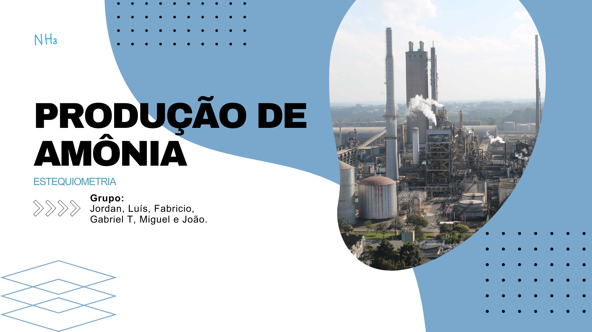
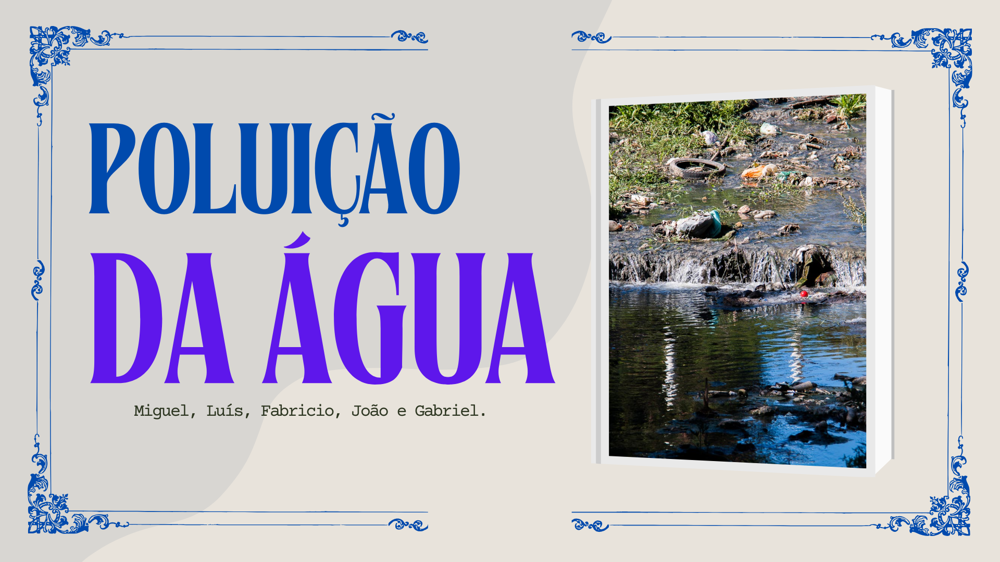

Primeiro Trimestre
Atividade Estequiometria
Link: Visualizar Desing no Canva
Nosso objetivo dessa atividade era pesquisar e apresentar como a estequiometria é aplicada em diferentes setores da indústria brasileira, explorando quantidades de reagentes e produtos, rendimento das reações e impactos econômicos e ambientais. Achei legal a ativdade, pois aprendi sobre um elemento químico que não tinha visto antes. Habilidades: C2 H7, H9 e H10
Poluição da Água
Link: Visualizar Desing no Canva
Nessa atividade eu e meu grupo deveríamos fazer uma apresentação no canva mostrando como a poluição da água pode afetar a nossa vida indiretamente e diretamente. Gostei da atividade, pois mostrou coisas que eu não sabia sobre o impacto ambiental. Habilidades: C1 - H1, H2 e H4
Decaimento Radioativo
Link: Visualizar Design no Canva
Nessa atividade aprendemos como a radioatividade afeta o mundo.